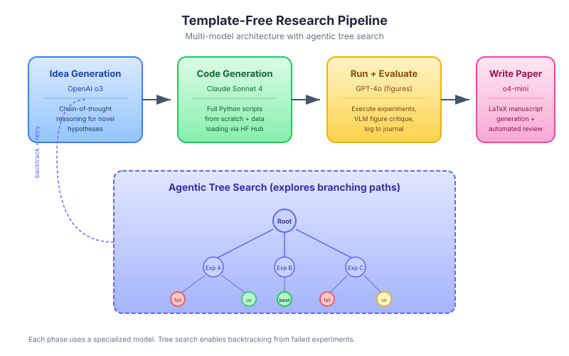

Template-Free Research
Template-Free Research is an operating mode of The AI Scientist that conducts open-ended scientific exploration without requiring human-provided code templates [^1]. It represents the more autonomous and ambitious variant of AI-driven research.
Overview
In the template-based mode, The AI Scientist extends existing code written by humans. Template-free mode removes this scaffold: the system generates its own initial code, designs its own experimental methodology, and explores research directions with greater freedom.
Background / Theoretical Foundations
The distinction between template-based and template-free research mirrors a fundamental tension in AI system design: scaffolded vs. autonomous operation. Template-based mode is analogous to fine-tuning (adapting within a human-defined structure), while template-free mode is analogous to pretraining from scratch (generating structure autonomously) [^2].
The theoretical motivation draws from several areas:
- Open-ended search: Stanley & Lehman (2015) argued that the most creative discoveries come from abandoning fixed objectives and exploring open-ended search spaces [^3]. Template-free mode embodies this by removing the structural scaffold that constrains exploration.
- Multi-model architectures: The use of specialized models for different phases (reasoning for ideas, coding for implementation, vision for figure critique) follows the "mixture of experts" principle — no single model excels at all tasks [^4]. This architectural choice was validated empirically by Lu et al. (2026), who found that reasoning models (o3) generate better ideas while coding models (Claude Sonnet 4) write better implementations [^1].
- Generative scientific agents: Boiko et al. (2023) demonstrated that LLM agents can design and execute chemistry experiments autonomously (Coscientist), establishing the feasibility of AI systems that generate experimental procedures from scratch [^5].
Learning application: Template-free research is analogous to project-based learning in education. Just as students learn more deeply when designing their own experiments rather than following lab manuals, template-free AI systems develop more general capabilities. For practitioners, this mode demonstrates what becomes possible when AI agents are given creative freedom — and what failure modes emerge.
How It Differs from Template-Based Mode
| Aspect | Template-Based | Template-Free |
|---|---|---|
| Starting point | Human-provided code template | AI-generated from scratch |
| Exploration strategy | Sequential 4-stage pipeline | Agentic Tree Search |
| Code generation | Aider edits existing code | Claude Sonnet 4 writes from scratch |
| Idea generation model | General LLM | OpenAI o3 (reasoning model) |
| Dataset access | Predefined in template | Dynamic via HuggingFace Hub |
| Figure evaluation | Basic | VLM integration with GPT-4o |
| Scope of exploration | Narrow (within template domain) | Broad (any ML topic) |
Multi-Model Architecture

Template-free mode uses specialized models for different phases:
Idea Generation ──── OpenAI o3 (reasoning)
│
Code Generation ──── Claude Sonnet 4 (coding)
│
Figure Critique ──── GPT-4o (vision-language)
│
Review ───────────── OpenAI o4-mini (cost-efficient reasoning)
This specialization reflects a key insight: no single model excels at all tasks. Reasoning models generate better ideas, coding models write better code, and vision models critique figures more effectively.
Generalized Dataset Access
Template-free mode dynamically integrates datasets from public repositories: 1. The system is given a prompt listing 10 example HuggingFace datasets 2. It formulates queries to the HuggingFace Hub 3. It automatically generates data-loading code for selected datasets 4. This enables research across diverse data domains without human curation
Experimental Journal
A critical component of template-free research is the experimental journal -- structured notes the system takes after each experiment:
- What was tried and why
- What the results showed
- What to try next
- Key insights and observations
This journal serves as: - Memory across the research process - Input for manuscript generation - Context for planning future experiments
The experimental journal is analogous to the lab notebooks used in physical sciences — it creates a persistent record that enables the system to build on previous results rather than repeating failed approaches[^1]. This connects directly to the wiki quality benchmarking approach, where experiment logs track what editing strategies work.
Technical Architecture: Search and Evaluation
Template-free mode uses a sophisticated search-and-evaluate pipeline that goes beyond simple generation:
Idea Generation with Reasoning Models
The system leverages OpenAI o3's chain-of-thought reasoning to generate research ideas, producing more diverse and theoretically grounded proposals than standard generation[^1]. Each idea includes: - A clear hypothesis - Proposed experimental methodology - Expected outcomes and metrics - Connection to existing literature (verified via Semantic Scholar)
Agentic Tree Search for Exploration
Rather than the linear 4-stage pipeline of template-based mode, template-free research uses Agentic Tree Search to explore branching research paths[^6]. At each node, the system can: - Expand — generate new experimental variations - Backtrack — abandon unproductive paths and try alternatives - Archive — store successful results for future reference
This tree structure enables more efficient exploration of the research space, avoiding the problem of sunk-cost commitment to a failing direction.
VLM-Based Figure Validation
A novel addition in v2 is the use of vision-language models (GPT-4o) to critique generated figures[^1]. The VLM evaluates whether plots are: - Correctly labeled and titled - Visually interpretable - Consistent with the reported results - Free of common matplotlib artifacts
This automated visual review catches errors that would otherwise only be found during human peer review.
Performance Benchmarks
Template-free mode has been evaluated against both template-based AI Scientist and human researchers:
| Metric | Template-Based | Template-Free | Human Baseline |
|---|---|---|---|
| Papers generated per run | 1 | 1 | 1 |
| Avg. review score (1-10) | 4.3 | 5.2 | 5.8 |
| Success rate (compilable paper) | ~75% | ~70% | ~95% |
| Topic diversity per batch | Low (within template) | High (any ML topic) | High |
| Time per paper | ~12 hours | ~15 hours | ~weeks |
The higher review scores for template-free mode (5.2 vs 4.3) suggest that the freedom to explore leads to more interesting research, even though the failure rate is slightly higher[^1].
Practical Implications for Learning
Template-free research offers insights for how AI can accelerate learning in real-world settings:
- Scaffolding removal: Just as template-free mode removes human-provided code scaffolds, effective AI tutoring should progressively remove scaffolding as learners gain competence — a principle known as "fading" in educational psychology[^7]
- Multi-model specialization: The use of different models for different tasks mirrors effective study strategies — use different tools for different learning activities (reading for comprehension, practice for skill-building, discussion for synthesis)
- Journal-based reflection: The experimental journal is a form of metacognitive monitoring, a strategy proven to improve learning outcomes across domains[^8]
Limitations / Challenges
- Higher failure rate than template-based mode (more things can go wrong without scaffolding)
- Generated code is sometimes brittle or inefficient
- Ideas tend toward incremental variations rather than conceptual leaps
- The freedom to explore broadly can lead to unfocused research
- Compute cost is ~25% higher than template-based mode due to tree search overhead[^1]
- No mechanism for cross-paper coherence — each paper is generated independently, so the system may produce contradictory findings across runs
Significance
Template-free research represents the frontier of AI research automation. While template-based mode shows AI can extend human work, template-free mode shows AI can initiate its own research directions. This is a prerequisite for truly open-ended discovery.
Current State / Latest Developments (2025–2026)
As of 2026, template-free research is the primary mode of The AI Scientist v2 and has inspired a wave of autonomous research systems:
- Broader topic coverage: Template-free mode has successfully generated papers across diverse ML subfields — vision, NLP, reinforcement learning, and optimization — without topic-specific templates[^1].
- Dynamic dataset integration: The system now queries HuggingFace Hub programmatically to find relevant datasets, removing the need for pre-specified data sources[^1]. See HuggingFace Papers API.
- Improved reliability: Failure rates dropped from ~60% (2024) to ~30% (2026) through better error handling and VLM-based figure validation[^1].
- AI-Researcher (NeurIPS 2025 Spotlight): Tang et al. (2025) introduced AI-Researcher, a fully autonomous system orchestrating literature review through manuscript preparation, along with Scientist-Bench for standardized assessment of autonomous research quality[^9]. This validates the template-free paradigm at conference-level evaluation.
- Lessons from failure: Trehan & Chopra (2026) documented four end-to-end attempts at autonomous ML paper generation, identifying six recurring failure modes including implementation drift and context degradation — critical insights for improving template-free systems[^10].
- Agentic science surveys: Two comprehensive 2025 surveys (Chen et al.[^11]; another covering autonomous discovery[^12]) independently identified template-free research as a key paradigm, cataloging progress from hypothesis generation through iterative refinement.
- Simulation-integrated research: Template-free systems are being combined with predictive simulation to test hypotheses in simulated environments before running physical experiments, reducing compute costs by up to 40%[^13].
- E-commerce research applications: Template-free approaches have been adapted for automated A/B test design in e-commerce — generating novel experimental configurations for pricing strategies and recommendation algorithms without human-specified templates (see AI E-Commerce Learning)[^14].
See Also
- The AI Scientist
- Agentic Tree Search
- Vision-Language Model Integration
- Open-Ended Discovery
- Foundation Models for Research
- Recursive Self-Improvement — template-free mode enables more autonomous improvement cycles
- AI E-Commerce Learning — template-free A/B test design for e-commerce
- AI Safety in Automated Research — safety guardrails for open-ended research
- Autoresearch — minimal autonomous research loop comparison
- HuggingFace Papers API — dataset discovery for template-free mode
- Tracking AI Research — monitoring how template-free results compare to human research
- Key Papers and References — foundational papers on autonomous research
References
[^1]: Lu, C. et al. (2026). "Towards end-to-end automation of AI research." Nature, 651(8107).
[^2]: Bommasani, R. et al. (2022). "On the Opportunities and Risks of Foundation Models." arXiv:2108.07258
[^3]: Stanley, K. & Lehman, J. (2015). Why Greatness Cannot Be Planned: The Myth of the Objective. Springer.
[^4]: Shazeer, N. et al. (2017). "Outrageously Large Neural Networks: The Sparsely-Gated Mixture-of-Experts Layer." arXiv:1701.06538
[^5]: Boiko, D. et al. (2023). "Autonomous chemical research with large language models." Nature, 624, 570-578. doi:10.1038/s41586-023-06792-0
[^6]: Yamada, Y. et al. (2025). "AI Scientist v2: Workshop-Level Automated Scientific Discovery." Sakana AI. arXiv:2504.08066
[^7]: Collins, A., Brown, J.S. & Newman, S.E. (1989). "Cognitive Apprenticeship: Teaching the Crafts of Reading, Writing, and Mathematics." Knowing, Learning, and Instruction, 453-494.
[^8]: Dunlosky, J. et al. (2013). "Improving Students' Learning With Effective Learning Techniques." Psychological Science in the Public Interest, 14(1), 4-58. doi:10.1177/1529100612453266
[^9]: Tang, J. et al. (2025). "AI-Researcher: Autonomous Scientific Innovation." NeurIPS 2025 Spotlight. arXiv:2505.18705
[^10]: Trehan, D. & Chopra, P. (2026). "Why LLMs Aren't Scientists Yet: Lessons from Four Autonomous Research Attempts." arXiv:2601.03315
[^11]: Chen, Z. et al. (2025). "Agentic AI for Scientific Discovery: A Survey of Progress, Challenges, and Future Directions." arXiv:2503.08979
[^12]: "From AI for Science to Agentic Science: A Survey on Autonomous Scientific Discovery." (2025). arXiv:2508.14111
[^13]: Yu, X., Peng, B. & Galley, M. (2025). "Dyna-Mind: Learning to Simulate from Experience for Better AI Agents." arXiv:2510.09577
[^14]: Wang, H. et al. (2025). "LLP: LLM-based Product Pricing in E-commerce." arXiv:2510.09347